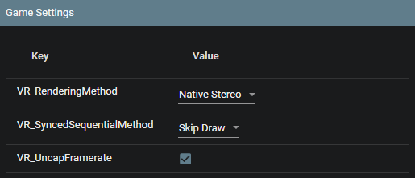
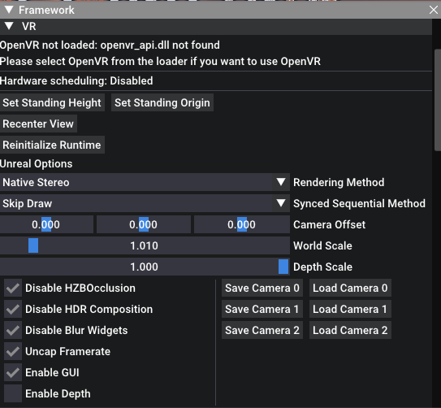
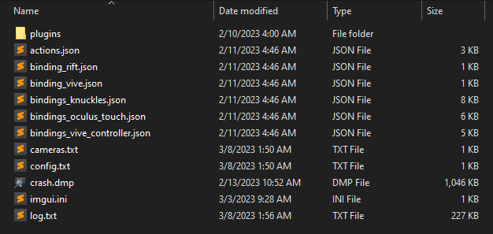

UEVR
Welcome to UEVR! This powerful tool will transform your favorite Unreal Engine games into 6DOF VR experiences with minimal effort.
UEVR can be downloaded from here.
Supported Engine Versions
- Unreal Engine 4.8 - 5.4
Supported Graphics APIs
- Direct3D 11
- Direct3D 12
Features
- Full 6DOF support out of the box (HMD movement)
- Full stereoscopic 3D out of the box
- Frontend GUI for easy process injection
- Supports OpenVR and OpenXR runtimes
- Native UE4/UE5 stereo rendering system for a truly immersive VR experience
- 3 rendering modes: Native Stereo, Synchronized Sequential, and Alternating/AFR
- Optional 3DOF motion controls in many games, essentially emulating a semi-native VR experience
- Optional roomscale movement in many games, moving the player character itself in 3D space along with the headset
- User-authored UI-based system for adding motion controls and first person to games that don't support them
- Automatic handling of most in-game UI so it is projected into 3D space
- In-game menu with shortcuts for adjusting settings
- Access to various CVars for fixing broken shaders/effects
- Optional depth buffer integration for improved latency on some headsets
- Per-game configurations
- C++ Plugin system and Blueprint support for modders to add additional features like motion controls
Reporting a bug
Click "Open Global Dir" in the frontend. Browse to the corresponding game folder that is having an issue and zip up the folder and upload it for us. Clicking "Export Config" is an alternative here to do this automatically.
You can then describe the issue and upload the file for us on the Issues.
You can read the full instructions when making an issue, choose the bug report template.
Getting Started
Before launching, ensure you have installed .NET 6.0. It should tell you where to install it upon first open, but if not, you can download it from here
Anti-viruses may delete files required to run from UEVR at this time. You may need to whitelist the UEVR directory and un-quarantine any files the anti-virus may have deleted.
- Launch UEVRInjector.exe
- Launch the target game
- Locate the game in the process dropdown list
- Select your desired runtime (OpenVR/OpenXR)
- Configure pre-injection settings
- Inject
To-dos before injection
Double check that the game you are injecting into has no Anti-Cheat mechanisms. If you are not sure, assume that all multiplayer games have Anti-Cheat, and do not attempt to inject into them. The exception here is if it can be disabled in some way to play offline.
- Disable HDR (it will still work without it, but the game will be darker than usual if it is)
- Start as administrator if the game is not visible in the list
- Pass
-nohmdto the game's command line and/or delete VR plugins from the game directory if the game contains any existing VR plugins - Disable any overlays that may conflict and cause crashes (Rivatuner, ASUS software, Razer software, Overwolf, etc...)
- Disable graphical options in-game that may cause crashes or severe issues like DLSS Frame Generation
- Consider disabling
Hardware Accelerated GPU Schedulingin your WindowsGraphics settings
Quick troubleshooting
There are some games that work pretty much perfectly out of the box, and others will need tinkering.
- If there are major graphical bugs or crashing, change the rendering method to Synced Sequential and check if the issue goes away
- If there is still crashing, there are various Compatibility options that can be enabled (Advanced View shows them, or can be seen in the frontend)
- Do not enable Extreme Compatibility Mode, only as a last resort
- If there are still graphical bugs present, enable Advanced View and tweak the CVars
- INI tweaks can work here as well
- If the game is locked to 60 FPS (even in flat), disable ASW/motion smoothing so the game doesn't slow down due to the runtime halving the framerate
- If the game is running poorly, lower the in-game settings, lower the resolution in the UEVR interface or SteamVR
- If there is rapid flickering or extreme lag, this likely indicates that DLSS Frame Generation is enabled, turn it off or disable
Hardware Accelerated GPU Schedulingin your WindowsGraphics settings. - OpenXR Toolkit may also need to be disabled if there is even more crashing or lag
If all fails, someone may have came up with a config for the game or can help you on the Flat2VR Discord.
If there is rotational judder/lag
There's a few reasons for this and fixes for it:
- If using Virtual Desktop, you must use OpenXR to prevent lag when rotating your head, OpenVR simply does not work correctly right now with Virtual Desktop
- The
Virtual Desktop fixmust be enabled if it isn't getting enabled (under Runtime)
- The
- You can also disable
r.OneFrameThreadLagunderConsole/CVars(advanced view must be enabled) - You can also modify the
Frame Delay Compensationunder Debug (advanced view must be enabled)
In-Game Menu
Press the Insert key or L3+R3 on a controller to access the in-game menu, which opens by default at startup. With the menu open, hold RT for various shortcuts:
- RT + Left Stick: Move the camera left/right/forward/back
- RT + Right Stick: Move the camera up/down
- RT + B: Reset camera offset
- RT + Y: Recenter view
- RT + X: Reset standing origin
Help! What games are Unreal Engine?
Use tools like Rai Pal.
Rai Pal is a tool by Raicuparta that can go through your entire library of games and attempt to tell you what engine, and what version of that engine they are using.
It also has some level of support for UEVR for automatic launching, as well as displaying user scores given to the VR compatibility of a given game.
Alex also has made a spreadsheet of supported games and how well they function, and various other metrics.
Quick overview of rendering methods
Native Stereo
When it works, it looks the best, performs the best (usually). Can cause crashes or graphical bugs if the game does not play well with it.
Temporal effects like TAA are fully intact. DLSS/FSR2 usually work completely fine with no ghosting in this mode.
Fully synchronized eye rendering. Works with the majority of games. Uses the actual stereo rendering pipeline in the Unreal Engine to achieve a stereoscopic image.
Synchronized Sequential
This is the first alternative option that should be used if Native Stereo is not working as expected or you are encountering graphical bugs. It should be noted that this mode gives worse performance than Native Stereo.
A form of AFR. Can fix many rendering bugs that are introduced with Native Stereo. Renders two frames sequentially in a synchronized fashion on the same engine tick.
Fully synchronized eye rendering. Game world does not advance time between frames.
Looks normal but temporal effects like TAA will have ghosting/doubling effect. Motion blur will need to be turned off.
Skip Draw skips the viewport draw on the next engine tick. Usually works the best but sometimes particle effects may not play at the correct speed.
Skip Tick skips the next engine tick entirely. Usually buggy but does fix particle effects and sometimes brings higher performance.
AFR
Alternated Frame Rendering. Renders each eye on separate frames in an alternating fashion, with the game world advancing time in between frames. Causes eye desyncs and usually nausea along with it.
Not synchronized. Generally should not be used unless the other two are unusable in some way.
Overview of UEVR usage by Alex

Getting started spreadsheet by Alex
Additional information
Read the Detailed overview for a comprehensive guide on how to fine-tune your VR experience.
Head over to the Flat2VR Discord.
Special thanks
- TheNewJavaman - Developer of the previous Unreal VR project.
To all the testers. These include:
-
Brian Tate - Founder of the Flat2VR community. He is the catalyst that kicked off this project. He was digging around and found out that most of the stereo pipeline is left in the engine.
-
Alex G/Virtual Insider - A tester from the start. Has helped find many bugs and issues. Has also provided many helpful suggestions and ideas.
-
Alex/Waifu Enjoyer - One of the most prolific testers. Has tested hundreds of games and has helped find many bugs and issues. Has also provided many helpful suggestions and ideas. Has provided helpful statistics on game compatibility.
-
Alchemist - DRG VR developer.
-
Ashok - Has helped find many bugs and issues. Has also provided many helpful suggestions and ideas. Has poked around various specific games making mods to fix issues with them and add things like Oculus controller prompts. Experimented a lot with UObjectHook to fix games and find issues/pain points with this feature.
-
Igoreso
-
Jay Fullerton - Has tested many games, and stands out as one of the testers with a lower end system. This has helped get an idea of how the tool performs on lower end hardware.
-
Kitt - Mechwarrior 5 VR developer.
-
Lance McCary - Has helped find many bugs and issues. Has also provided many helpful suggestions and ideas. Helped coordinate with Matthieu Bucchianeri to get eye tracked foveated rendering working in OpenXR Toolkit.
-
Kalth Streil - Has helped find many bugs and issues.
-
Matthieu Bucchianeri - Creator of OpenXR Toolkit. Has helped figure out what needed to be changed to get eye tracked foveated rendering working. Has also provided many helpful technical insights into the OpenXR API and VR development in general.
-
Narknon - UE4SS developer. Provided a lot of helpful information about the Unreal Engine in general.
-
PanterA - Joined late into development, but tested a good amount of games and provided good feedback. Located games that were causing crashes after code changes. Helped find issues with AMD GPUs.
-
PinkMilkProductions - DRG VR developer.
-
pvncher
Disclaimer
UEVR is not affiliated with, endorsed by, or connected to Epic Games, Unreal Engine, or any of their affiliates. All trademarks are the property of their respective owners.
UEVR: In-Depth Guide
Dive deeper into the UEVR and learn how to fine-tune your VR experience with this comprehensive guide. We'll explore various settings, configurations, and troubleshooting tips to help you get the most out of your favorite Unreal Engine games in VR.
Frontend GUI
The frontend GUI provides an intuitive interface for injecting VR functionality into your chosen game. Here, you can:
- Select a process to inject into
- Choose your desired runtime (OpenVR/OpenXR)
- Toggle VR plugins (if necessary)
- Configure pre-injection settings

OpenVR or OpenXR?
OpenVR usually has the highest compatibility, but OpenXR usually gives higher performance when it works, especially if the headset has a native OpenXR runtime.
OpenVR requires SteamVR to be installed. OpenXR requires a valid OpenXR runtime for the headset, but can also run through SteamVR if SteamVR is set as the active runtime.
When using Virtual Desktop, you must use OpenXR to avoid rotation lag when moving your head.
Pre-Injection Settings
Before injecting, you can customize the following settings:
VR_RenderingMethod: Choose from Native Stereo, Synchronized Sequential, or Alternating/AFRVR_SyncedSequentialMethod: Configure the behavior of the Synced Sequential rendering methodVR_UncapFramerate: Enable or disable framerate uncapping
After injection, the rest of the options will populate automatically. You can modify these settings in the in-game menu or through the config.txt file.

In-Game Menu
The in-game menu offers additional configuration options and shortcuts for adjusting settings on the fly. Access the menu by pressing the Insert key or L3+R3 on a controller.
The in-game menu can be accessed either inside the VR headset, or you can use the desktop view to adjust settings without having to put on a headset.
As of recent updates, the menu can be controlled as well by pointing your motion controller at it to emulate a mouse.


In-Game Shortcuts
While holding RT:
- RT + Left Stick: Move the camera left/right/forward/back
- RT + Right Stick: Move the camera up/down
- RT + B: Reset camera offset
- RT + Y: Recenter view
- RT + X: Reset standing origin
CVars and Fixes

Use the in-game menu to access and modify various CVars for fixing broken shaders and effects. The tool offers a range of options for addressing common rendering issues.
Depth Buffer Integration
While depth buffer integration is disabled by default, enabling it can greatly improve latency on Oculus headsets when using OpenXR with the native Oculus OpenXR runtime. To enable depth buffer integration, adjust the VR_EnableDepth setting.

Configurations
All configurations are stored on a per-game basis in the %APPDATA%/UnrealVRMod directory. You can modify settings directly in the UI or through the config.txt file. This directory can be accessed in the frontend GUI by clicking the "Open Global Dir" button.

Console commands
Configurations can have console commands that are executed at startup within the user_script.txt file. It must be created manually.
Example user_script.txt file:
stat fps
r.DefaultFeature.AntiAliasing 0
Plugins
Plugins can be installed in the plugins folder in the game's configuration directory. Simply drop the plugin dll into it.
Troubleshooting & Optimization
Optimal performance and compatibility
- Tweak graphical settings in-game to reduce load
- Experiment with different rendering methods if you encounter rendering bugs or crashes
- Use the in-game menu and CVars to address shader and effect issues
- Enable depth buffer integration for improved latency on Oculus headsets (OpenXR only)
- Consider upgrading your system for the best experience with high-end AAA titles
Further tweaks can be done by modifying the game's INI files, using UUU, UE4SS, or other external tools. Various tweaks that have been made for the normal version of the games can be applied to the VR version as well.
For those with motion sickness
Enable "Decoupled Pitch" under the VR options. This will stop the camera from rolling or moving vertically.
UEVR: Default VR Controller Bindings
UEVR implements (or attempts to implement) 1:1 mappings from a default Xbox controller to a VR controller.
These can be rebound in a few ways:
- If using OpenXR, you can modify the bindings under Runtime
- If using SteamVR/OpenVR, they can be remapped like a normal VR game
- If using Steam with any runtime, Steam Input can be used to remap the buttons as well
Default Bindings
-
Left thumbstick: Move
-
Right thumbstick: Rotate
-
Left Grip: LB
-
Right Grip: RB
-
Left Trigger: LT
-
Right Trigger: RT
-
Left Thumbstick Click: L3
-
Right Thumbstick Click: R3
-
Left System Button: Start/Pause
-
Left A Button: B/Circle
-
Left B Button: Y/Triangle
-
Right A Button: A/X
-
Right B Button: X/Square
Special Default Bindings
- Left System Button (Long Press): Select/View
Oculus Special Bindings
- Right Thumbrest + Left thumbstick: DPad
- This can be disabled if you want to use the thumbrest for something else or the thumbrest has issues
UEVR: UObjectHook
What is UObjectHook?
UObjectHook is an extra part of UEVR that can be used to do many things, such as:
- Attach the camera to any object or component in the game
- Add 6DoF motion controls by attaching any components to the motion controllers
- This is usually contingent on the 3DoF motion controls working in the first place
- Modify and view any property of any active UObject in the game
- This can be saved by right clicking the property
- Toggle the visibility of any component in the game
- Save the state of all of the above for persistence across sessions
Important information
UObjectHook is not enabled by default. When giving out profiles, ensure you have "Enabled at Startup" enabled under UObjectHook's config tab.
If a profile received does not work, it is likely because of the above. UObjectHook is not enabled by default, so you need to manually open the UObjectHook menu to enable it if this is the case.
Examples
In the following examples, we'll be using the "First Person Template" from the Unreal Engine.
These are just the simplest examples possible. There are games that will have differently named components. Sometimes you'll need to go through multiple component lists, children, or properties. You'll usually want to be on the lookout for SkeletalMeshComponent components for attachments.
Attaching the camera to an object
In this example, we'll attach the camera to the local player/pawn.
- Open the in-game menu and enable advanced options if not already enabled
- Navigate to UObjectHook on the left side
- Go to "Common Objects"
- Go to "Acknowledged Pawn"
- Click "Attach Camera to" (click "Attach Camera to (Relative)" if the game is already first-person)
- Click "Save State"
Doing this allows you to turn third person games into first person games. If done in a first person game, this removes unwanted camera movement that should not be there in VR.
Attaching components to motion controllers
In this example, we'll attach a component(s) to the motion controllers.
- Open the in-game menu and enable advanced options if not already enabled
- Navigate to UObjectHook on the left side
- Go to "Common Objects"
- Go to "Acknowledged Pawn"
- Go to "Components"
- Click "SkeletalMeshComponent Mesh2P" and uncheck "Visible"
- Click "SkeletalMeshComponent FP_Gun"
- Click "Attach right" or "Attach left" depending on which controller you want to attach to
- Click "Adjust"
- The menu will close, move your controller so that it lines up with the gun in-game
- Open the menu again, and the weapon should be attached to the controller with the correct offset
- Now click "Permanent Change", this will allow the projectiles to fire from the correct location
- Click "Save State"
- Navigate to "Input" on the left side
- Change the "Aim Method" to "Left Controller" or "Right Controller" depending on which controller you attached the weapon to
- You should now have full 6DoF motion controls for the weapon
Glossary
Permanent Change
This means that UEVR will no longer reset the object back to its original position and rotation after rendering is over. This can make projectiles come out of the correct spot with weapons, and make things like colliders work with melee weapons (if they have them).
It is not enabled by default because the user can inadvertently set this option on something that dictates their player position, launching them out of the map.
UEVR: Plugin Development
This section covers the basics of developing plugins for UEVR. If you're looking for information on how to use UEVR, check out the Usage section.
If you are unfamiliar with C/C++, you can try the Blueprint API.
Overview
Plugins in UEVR are developed primarily in C++. However, the API header is written in C. This means it's possible to bind it to other languages, or even just write them in C.
The API header is located in include/uevr/API.h.
The C++ API header is in include/uevr/API.hpp.
The base C++ plugin header is in include/uevr/Plugin.hpp.
Plugin Installation
In the frontend, click the "Open Global Dir" button. Locate the corresponding game directory, and place the DLL in the plugins folder.
During plugin development, you many want to create a symbolic link from the plugins dir to your project's DLL output directory. This way, you can build the plugin and have it automatically load into UEVR.
Plugin Lifecycle
Plugins are loaded and unloaded at runtime. The plugin lifecycle is as follows:
- UEVR starts its initialization process
- UEVR initially loads all plugins, and calls their
DLLMainfunctions- If the plugin is a C++ plugin, the DLLMain function will call the
on_dllmainfunction of the plugin
- If the plugin is a C++ plugin, the DLLMain function will call the
- UEVR begins initializing the rest of its own components
- After initialization, UEVR calls the
on_initializefunction of each plugin - During its execution loop, UEVR will call the various
on_*functions of each plugin - The user can choose to unload all plugins, and reload them at will at runtime
The easy way
Plugin.hpp provides a class that can be inherited from to create a plugin. This class provides a number of virtual functions that can be overridden to implement the plugin's functionality.
The way it is structured is also how you would use the API in C++ using the API.h and API.hpp headers.
Plugin.hpp also implements a DLLMain for you, so you don't have to worry about that. All you need to worry about is overriding the virtual functions.
The project must be compiled as a DLL.
A simple example
#include <memory>
#include "uevr/Plugin.hpp"
using namespace uevr;
#define PLUGIN_LOG_ONCE(...) {\
static bool _logged_ = false; \
if (!_logged_) { \
_logged_ = true; \
API::get()->log_info(__VA_ARGS__); \
}}
class ExamplePlugin : public uevr::Plugin {
public:
ExamplePlugin() = default;
void on_dllmain() override {}
void on_initialize() override {
// Logs to the appdata UnrealVRMod log.txt file
API::get()->log_error("%s %s", "Hello", "error");
API::get()->log_warn("%s %s", "Hello", "warning");
API::get()->log_info("%s %s", "Hello", "info");
}
void on_pre_engine_tick(UEVR_UGameEngineHandle engine, float delta) override {
PLUGIN_LOG_ONCE("Pre Engine Tick: %f", delta);
}
void on_post_engine_tick(UEVR_UGameEngineHandle engine, float delta) override {
PLUGIN_LOG_ONCE("Post Engine Tick: %f", delta);
}
void on_pre_slate_draw_window(UEVR_FSlateRHIRendererHandle renderer, UEVR_FViewportInfoHandle viewport_info) override {
PLUGIN_LOG_ONCE("Pre Slate Draw Window");
}
void on_post_slate_draw_window(UEVR_FSlateRHIRendererHandle renderer, UEVR_FViewportInfoHandle viewport_info) override {
PLUGIN_LOG_ONCE("Post Slate Draw Window");
}
};
// Actually creates the plugin. Very important that this global is created.
// The fact that it's using std::unique_ptr is not important, as long as the constructor is called in some way.
std::unique_ptr<ExamplePlugin> g_plugin{new ExamplePlugin()};
UEVR: Blueprint API
UEVR implements some functions within the Unreal Engine's existing VR Blueprint API. These functions would usually do nothing because the VR plugins are not present. UEVR implements these functions so modders can easily access HMD and controller data without having to write a C++ plugin.
This should be more familiar to modders, and easier to use than the C++ API. Normal game developers should feel right at home as well.
It should be noted that generating the uproject for interacting with these games is out of UEVR's scope. There are other tools to assist in this, and others may have already generated one somewhere.
UE4SS can assist in generating projects for blueprints.
Official modding tools by the game developers can work here too, if they provide a working uproject.
Automatically handled components
Motion Controller components
When UObjectHook is activated
All UMotionControllerComponent ("Motion Controller") components will have their location and rotation set correctly to the world transform of the user's motion controllers.
This means you can make Motion Controller components in Blueprint and UEVR will handle it for you, as long as you enable UObjectHook. You can then do any logic you wish with the Motion Controller transforms, like parenting a weapon mesh to one of them.
You must correctly set the Motion Source name to either Left or Right. Case sensitive. Or modify the Hand property on older UE versions.
Implemented functions
Tested and confirmed working on 4.27 and 5.0.3
Load Blueprint Code in the UEVR menu must be turned on or one of the head/controller aiming options must be enabled for these to work.
Some functions explicitly require Load Blueprint Code to be enabled, not just the aiming options.
For more information on these functions, visit the Unreal Engine documentation
Head Mounted Display: Is Head Mounted Display Enabled
Always works on < 4.18. >= 4.18, Load Blueprint Code must be explicitly enabled for this to work.
Head Mounted Display: Get Device Pose
This one only works for the HMD for now. Bit of a hacky implementation, but it works.
Head Mounted Display: Get Orientation And Position
Gets data about the HMD transform. Load Blueprint Code must be explicitly enabled for this to work on >= 4.18.
Head Mounted Display: Get Motion Controller Data
Only works for left and right controller.
Valid, Aim Position, Aim Rotation, Grip Position, Grip Rotation are implemented.
Head Mounted Display: Get XRSystem Flags
Metadata used to inform blueprint about certain things.
enum ECustomSystemFlags : int32_t {
SYSTEMFLAG_NONE = 0,
SYSTEMFLAG_HMD_ACTIVE = 1 << 0,
SYSTEMFLAG_DECOUPLED_PITCH = 1 << 1,
SYSTEMFLAG_OPENXR = 1 << 2,
SYSTEMFLAG_OPENVR = 1 << 3,
SYSTEMFLAG_MOTION_CONTROLLERS_ACTIVE = 1 << 4,
SYSTEMFLAG_LEFT_THUMBREST_ACTIVE = 1 << 5,
SYSTEMFLAG_RIGHT_THUMBREST_ACTIVE = 1 << 6,
SYSTEMFLAG_GAME_AIMING_MODE = 1 << 7,
SYSTEMFLAG_HEAD_AIMING_MODE = 1 << 8,
SYSTEMFLAG_LEFT_CONTROLLER_AIMING_MODE = 1 << 9,
SYSTEMFLAG_RIGHT_CONTROLLER_AIMING_MODE = 1 << 10,
SYSTEMFLAG_TWO_HANDED_LEFT_AIMING_MODE = 1 << 11,
SYSTEMFLAG_TWO_HANDED_RIGHT_AIMING_MODE = 1 << 12,
};
Head Mounted Display: Get HMDData
Untested.
Head Mounted Display: Reset Orientation
Head Mounted Display: Reset Position
Head Mounted Display: Reset Orientation and Position
UEVR: Lua API
UEVR provides a Lua API that can be used to create plugins.
Scripts can be loaded under LuaLoader, and are automatically loaded from <game config folder>/scripts/*.lua.
The Lua API can also be loaded in different environments, like UE4SS. UEVR comes with a LuaVR.dll for this purpose.
Example
print("Initializing hello_world.lua")
UEVR_UObjectHook.activate()
local api = uevr.api;
local uobjects = uevr.types.FUObjectArray.get()
print("Printing first 5 UObjects")
for i=0, 5 do
local uobject = uobjects:get_object(i)
if uobject ~= nil then
print(uobject:get_full_name())
end
end
local once = true
local last_world = nil
local last_level = nil
uevr.sdk.callbacks.on_post_engine_tick(function(engine, delta)
end)
local spawn_once = true
uevr.sdk.callbacks.on_pre_engine_tick(function(engine, delta)
--[[if spawn_once then
local cheat_manager_c = api:find_uobject("Class /Script/Engine.CheatManager")
local cheat_manager = UEVR_UObjectHook.get_first_object_by_class(cheat_manager_c)
print(tostring(cheat_manager_c))
cheat_manager:Summon("Something_C")
spawn_once = false
end]]
local game_engine_class = api:find_uobject("Class /Script/Engine.GameEngine")
local game_engine = UEVR_UObjectHook.get_first_object_by_class(game_engine_class)
local viewport = game_engine.GameViewport
if viewport == nil then
print("Viewport is nil")
return
end
local world = viewport.World
if world == nil then
print("World is nil")
return
end
if world ~= last_world then
print("World changed")
end
last_world = world
local level = world.PersistentLevel
if level == nil then
print("Level is nil")
return
end
if level ~= last_level then
print("Level changed")
print("Level name: " .. level:get_full_name())
local game_instance = game_engine.GameInstance
if game_instance == nil then
print("GameInstance is nil")
return
end
local local_players = game_instance.LocalPlayers
for i in ipairs(local_players) do
local player = local_players[i]
local player_controller = player.PlayerController
local pawn = player_controller.Pawn
if pawn ~= nil then
print("Pawn: " .. pawn:get_full_name())
--pawn.BaseEyeHeight = 0.0
--pawn.bActorEnableCollision = not pawn.bActorEnableCollision
local actor_component_c = api:find_uobject("Class /Script/Engine.ActorComponent");
print("actor_component_c class: " .. tostring(actor_component_c))
local test_component = pawn:GetComponentByClass(actor_component_c)
print("TestComponent: " .. tostring(test_component))
local controller = pawn.Controller
if controller ~= nil then
print("Controller: " .. controller:get_full_name())
local velocity = controller:GetVelocity()
print("Velocity: " .. tostring(velocity.x) .. ", " .. tostring(velocity.y) .. ", " .. tostring(velocity.z))
local test = Vector3d.new(1.337, 1.0, 1.0)
print("Test: " .. tostring(test.x) .. ", " .. tostring(test.y) .. ", " .. tostring(test.z))
controller:SetActorScale3D(Vector3d.new(1.337, 1.0, 1.0))
local actor_scale_3d = controller:GetActorScale3D()
print("ActorScale3D: " .. tostring(actor_scale_3d.x) .. ", " .. tostring(actor_scale_3d.y) .. ", " .. tostring(actor_scale_3d.z))
local control_rotation = controller:GetControlRotation()
print("ControlRotation: " .. tostring(control_rotation.Pitch) .. ", " .. tostring(control_rotation.Yaw) .. ", " .. tostring(control_rotation.Roll))
control_rotation.Pitch = 1.337
controller:SetControlRotation(control_rotation)
control_rotation = controller:GetControlRotation()
print("New ControlRotation: " .. tostring(control_rotation.Pitch) .. ", " .. tostring(control_rotation.Yaw) .. ", " .. tostring(control_rotation.Roll))
end
local primary_actor_tick = pawn.PrimaryActorTick
if primary_actor_tick ~= nil then
print("PrimaryActorTick: " .. tostring(primary_actor_tick))
-- Print various properties, this is testing of StructProperty as PrimaryActorTick is a struct
local tick_interval = primary_actor_tick.TickInterval
print("TickInterval: " .. tostring(tick_interval))
print("bAllowTickOnDedicatedServer: " .. tostring(primary_actor_tick.bAllowTickOnDedicatedServer))
print("bCanEverTick: " .. tostring(primary_actor_tick.bCanEverTick))
print("bStartWithTickEnabled: " .. tostring(primary_actor_tick.bStartWithTickEnabled))
print("bTickEvenWhenPaused: " .. tostring(primary_actor_tick.bTickEvenWhenPaused))
else
print("PrimaryActorTick is nil")
end
local control_input_vector = pawn.ControlInputVector
pawn.ControlInputVector.x = 1.337
print("ControlInputVector: " .. tostring(control_input_vector.x) .. ", " .. tostring(control_input_vector.y) .. ", " .. tostring(control_input_vector.z))
local is_actor_tick_enabled = pawn:IsActorTickEnabled()
print("IsActorTickEnabled: " .. tostring(is_actor_tick_enabled))
pawn:SetActorTickEnabled(not is_actor_tick_enabled)
is_actor_tick_enabled = pawn:IsActorTickEnabled()
print("New IsActorTickEnabled: " .. tostring(is_actor_tick_enabled))
pawn:SetActorTickEnabled(not is_actor_tick_enabled) -- resets it back to default
local life_span = pawn:GetLifeSpan()
local og_life_span = life_span
print("LifeSpan: " .. tostring(life_span))
pawn:SetLifeSpan(10.0)
life_span = pawn:GetLifeSpan()
print("New LifeSpan: " .. tostring(life_span))
pawn:SetLifeSpan(og_life_span) -- resets it back to default
local net_driver_name = pawn.NetDriverName:to_string()
print("NetDriverName: " .. net_driver_name)
end
if player_controller ~= nil then
print("PlayerController: " .. player_controller:get_full_name())
end
end
print("Local players: " .. tostring(local_players))
end
last_level = level
if once then
print("executing stat fps")
uevr.api:execute_command("stat fps")
once = false
print("executing stat unit")
uevr.api:execute_command("stat unit")
print("GameEngine class: " .. game_engine_class:get_full_name())
print("GameEngine object: " .. game_engine:get_full_name())
end
end)
uevr.sdk.callbacks.on_script_reset(function()
print("Resetting hello_world.lua")
end)
Example
local LuaVR = require("LuaVR")
local function vr_print(text)
print("[LuaVR Script] " .. text .. "\n")
end
local params = LuaVR.params
local callbacks = params.sdk.callbacks
local total_t = 0.0
-- Example usage of callbacks
callbacks.on_pre_engine_tick(function(engine, delta)
total_t = total_t + delta
end)
-- Modifies the camera position
callbacks.on_post_calculate_stereo_view_offset(function(device, view_index, world_to_meters, position, rotation, is_double)
position.z = position.z + 100.0
position.y = position.y - 100.0
end)
-- UEVR_PluginInitializeParam
-- UEVR_PluginVersion
vr_print("Major: " .. tostring(params.version.major))
vr_print("Minor: " .. tostring(params.version.minor))
vr_print("Patch: " .. tostring(params.version.patch))
-- UEVR_PluginFunctions
vr_print("Is drawing ui: " .. tostring(params.functions.is_drawing_ui()))
params.functions.log_info("Hello from LuaVR!")
params.functions.log_warn("Hello from LuaVR!")
params.functions.log_error("Hello from LuaVR!")
-- UEVR_VRData
vr_print("Runtime ready state: " .. tostring(params.vr.is_runtime_ready()))
vr_print("Is OpenVR: " .. tostring(params.vr.is_openvr()))
vr_print("Is OpenXR: " .. tostring(params.vr.is_openxr()))
vr_print("Is HMD Active: " .. tostring(params.vr.is_hmd_active()))
local standing_origin = UEVR_Vector3f.new()
params.vr.get_standing_origin(standing_origin)
vr_print("Standing Origin: " .. tostring(standing_origin.x) .. ", " .. tostring(standing_origin.y) .. ", " .. tostring(standing_origin.z))
local rotation_offset = UEVR_Vector3f.new()
params.vr.get_rotation_offset(rotation_offset)
vr_print("Rotation Offset: " .. tostring(rotation_offset.x) .. ", " .. tostring(rotation_offset.y) .. ", " .. tostring(rotation_offset.z))
local hmd_index = params.vr.get_hmd_index()
vr_print("HMD Index: " .. tostring(hmd_index))
local left_controller_index = params.vr.get_left_controller_index()
vr_print("Left Controller Index: " .. tostring(left_controller_index))
local right_controller_index = params.vr.get_right_controller_index()
vr_print("Right Controller Index: " .. tostring(right_controller_index))
local hmd_position = UEVR_Vector3f.new()
local hmd_rotation = UEVR_Quaternionf.new()
params.vr.get_pose(hmd_index, hmd_position, hmd_rotation)
vr_print("HMD Position: " .. tostring(hmd_position.x) .. ", " .. tostring(hmd_position.y) .. ", " .. tostring(hmd_position.z))
vr_print("HMD Rotation: " .. tostring(hmd_rotation.x) .. ", " .. tostring(hmd_rotation.y) .. ", " .. tostring(hmd_rotation.z) .. ", " .. tostring(hmd_rotation.w))
if left_controller_index ~= -1 then
local left_controller_position = UEVR_Vector3f.new()
local left_controller_rotation = UEVR_Quaternionf.new()
params.vr.get_pose(left_controller_index, left_controller_position, left_controller_rotation)
vr_print("Left Controller Position: " .. tostring(left_controller_position.x) .. ", " .. tostring(left_controller_position.y) .. ", " .. tostring(left_controller_position.z))
vr_print("Left Controller Rotation: " .. tostring(left_controller_rotation.x) .. ", " .. tostring(left_controller_rotation.y) .. ", " .. tostring(left_controller_rotation.z) .. ", " .. tostring(left_controller_rotation.w))
end
if right_controller_index ~= -1 then
local right_controller_position = UEVR_Vector3f.new()
local right_controller_rotation = UEVR_Quaternionf.new()
params.vr.get_pose(right_controller_index, right_controller_position, right_controller_rotation)
vr_print("Right Controller Position: " .. tostring(right_controller_position.x) .. ", " .. tostring(right_controller_position.y) .. ", " .. tostring(right_controller_position.z))
vr_print("Right Controller Rotation: " .. tostring(right_controller_rotation.x) .. ", " .. tostring(right_controller_rotation.y) .. ", " .. tostring(right_controller_rotation.z) .. ", " .. tostring(right_controller_rotation.w))
end
local left_eye_offset = UEVR_Vector3f.new()
local right_eye_offset = UEVR_Vector3f.new()
params.vr.get_eye_offset(0, left_eye_offset)
params.vr.get_eye_offset(1, right_eye_offset)
vr_print("Left Eye Offset: " .. tostring(left_eye_offset.x) .. ", " .. tostring(left_eye_offset.y) .. ", " .. tostring(left_eye_offset.z))
vr_print("Right Eye Offset: " .. tostring(right_eye_offset.x) .. ", " .. tostring(right_eye_offset.y) .. ", " .. tostring(right_eye_offset.z))
local is_using_controllers = params.vr.is_using_controllers()
vr_print("Is Using Controllers: " .. tostring(is_using_controllers))
uevr.api
Members
uevr.api.sdk
Functions
uevr.api:find_uobject(name: string)
Searches the UEVR_FUObjectArray for an object with the specified name. Returns the object as a UEVR_UObject* object, or nil if not found.
Should not be constantly used, unless it is for class objects, or objects that are only created once. Otherwise, use UClass:get_objects_matching instead or the equivalent UEVR_UObjectHook functions.
uevr.api:get_engine()
Returns the global UGameEngine object.
uevr.api:get_player_controller(index: number)
Returns the player controller at the specified index, which is a UEVR_UObject* object.
uevr.api:get_local_pawn(index: number)
Returns the local pawn at the specified index, which is a UEVR_UObject* object.
uevr.api:spawn_object(class: UClass*, outer: UObject*)
Attempts to spawn an object of the specified class with the specified outer object. Returns the spawned object as a UEVR_UObject* object.
uevr.api:execute_command(command: string)
Executes the specified console command. Does not operate 1:1 with the native UE console, as it does not pass the command onto the player controller, but should work with most commands.
uevr.api:get_uobject_array()
Returns the UEVR_FUObjectArray instance.
uevr.api:get_console_manager()
Returns the FConsoleManager instance.
uevr.types
Members
uevr.types.UObject
uevr.types.UStruct
uevr.types.UClass
uevr.types.UFunction
uevr.types.FField
uevr.types.FFieldClass
uevr.types.FConsoleManager
uevr.types.IConsoleObject
uevr.types.IConsoleVariable
uevr.types.IConsoleCommand
uevr.types.FName
uevr.types.FUObjectArray
uevr.types.UObjectHook
UEVR_UObject
What is UObject?
UObject are objects that are part of the Unreal Engine's object system. They are backed by a UClass and can be used to represent anything in the game, such as actors, components, and more.
Meta Functions
object:__index(key: string)
Wrapper for object:get_property(key). Can be used to call functions on the UObject.
ex:
obj:SomeFunction()
local asdf = obj.SomeProperty
object:__newindex(key: string, value: any)
Wrapper for object:set_property(key, value)
ex:
obj.SomeProperty = 123
Functions
UEVR_UObject.static_class()
Returns the UEVR_UClass* descriptor for UObject.
obj:get_address()
Returns the base address of the UObject.
obj:get_fname()
Returns a UEVR_FName object.
obj:get_full_name()
Returns the full name of the UObject as a Lua string.
obj:is_a(class: UClass*)
Returns true if the UObject is an instance of the specified class.
obj:as_class()
Returns the UObject as an instance of UEVR_UClass, or nil if it is not a class.
obj:as_struct()
Returns the UObject as an instance of UEVR_UStruct, or nil if it is not a struct.
obj:as_function()
Returns the UObject as an instance of UEVR_UFunction, or nil if it is not a function.
obj:get_class()
Returns the UEVR_UClass* object of the UObject.
obj:get_outer()
Returns the outer UEVR_UObject* of the UObject.
obj:get_property(name: string)
Returns the value of the specified property of the UObject.
obj:set_property(name: string, value: any)
Sets the value of the specified property of the UObject. Not all properties are supported.
obj:call(name: string, args...)
Calls the specified function of the UObject with the specified arguments.
UEVR_UStruct
What is UStruct?
UStruct is a struct that represents a struct in Unreal Engine. Objects that can be described by a UStruct (but not a UClass) are usually POD types or simple data structures like FVector.
UStruct inherits all the functions from UEVR_UObject.
Functions
UEVR_UStruct.static_class()
Returns the UEVR_UClass* descriptor for UStruct.
struct:get_super_struct()
Returns the UEVR_UStruct* object of the super struct.
struct:get_super()
Same as struct:get_super_struct().
struct:find_function(name: string)
Returns the UEVR_UFunction* object of the function with the specified name.
struct:get_child_properties()
Returns the first UEVR_FProperty* object of the struct. Use property:get_next() to iterate through the properties.
struct:get_properties_size()
Returns the total byte size of the properties of the struct.
UEVR_UClass
What is UClass?
UClass acts as a descriptor for a class in Unreal Engine. It contains reflected information about the class, such as its name, properties, and functions.
UClass inherits all the functions from UEVR_UStruct.
Functions
UEVR_UClass.static_class()
Returns the UEVR_UClass* descriptor for UClass.
class:get_class_default_object()
Returns the default UEVR_UObject* object for the class.
class:get_objects_matching(allow_default: bool)
Returns an array of UEVR_UObject* objects that are instances of the class. If allow_default is true, default objects are included in the array.
class:get_first_object_matching(allow_default: bool)
Returns the first UEVR_UObject* object that is an instance of the class. If allow_default is true, default objects are included in the search.
UEVR_UFunction
What is UFunction?
UFunction is a struct that represents a function in Unreal Engine. Functions are usually associated with a UClass and can be called on instances of that class.
Functions
UEVR_FName
What is FName?
FName is a struct that represents a name in Unreal Engine.
Functions
name:to_string()
Returns a Lua string representation of the name.
UEVR_FField
What is FField?
FField is a struct that represents a field in Unreal Engine.
Functions
field:get_next()
Returns the next UEVR_FField* object in the linked list of fields.
field:get_fname()
Returns the UEVR_FName object of the field name.
field:get_class()
Returns the UEVR_FFieldClass object of the field.
UEVR_FFieldClass
What is FFieldClass?
FFieldClass is a struct that represents a class of a field in Unreal Engine.
Functions
class:get_fname()
Returns the UEVR_FName object of the class.
class:get_name()
Returns the name of the class as a Lua string.
UEVR_FUObjectArray
What is FUObjectArray?
FUObjectArray is a struct that contains a list of all UObject instances in Unreal Engine.
Functions
UEVR_FUObjectArray.get()
Returns the instance of the FUObjectArray.
arr:is_chunked()
Returns true if the array is chunked.
arr:is_inlined()
Returns true if the array is inlined.
arr:get_objects_offset()
Returns the offset of the objects in the array.
arr:get_item_distance()
Returns the distance between items in the array.
arr:get_object_count()
Returns the number of objects in the array.
arr:get_objects_ptr()
arr:get_object(index: number)
Returns the UEVR_UObject* object at the specified index.
arr:get_item(index: number)
Returns the UEVR_FUObjectItem* object at the specified index.
FConsoleManager
Instance can be obtained with uevr.api:get_console_manager().
Functions
console:get_console_objects()
Returns a TArray<ConsoleObjectElement> of console objects.
console:find_object(name: string)
Returns the IConsoleObject object with the specified name.
console:find_variable(name: string)
Returns the IConsoleVariable object with the specified name.
console:find_command(name: string)
Returns the IConsoleCommand object with the specified name.
UEVR_IConsoleObject
IConsoleObject is a base class for console objects.
Functions
obj:as_command()
Returns the IConsoleCommand object if the console object is a command, or nil if it is not.
UEVR_IConsoleVariable
IConsoleVariable is a class representing a console variable.
Inherits from IConsoleObject.
Functions
var:set(value: any)
Sets the value of the console variable.
value can be a number or a string.
var:set_float(value: number)
var:set_int(value: number)
var:set_ex(value: any, flags: number)
var:get_int()
Returns the value of the console variable as an integer.
var:get_float()
Returns the value of the console variable as a float.
UEVR_IConsoleCommand
IConsoleCommand is a class representing a console command.
Inherits from IConsoleObject.
Functions
cmd:execute(args: string)
UEVR_UObjectHook
What is UObjectHook?
UObjectHook is a UEVR defined class that hooks into the UObject creation and destruction process. It is used to track UObject instances with minimal performance overhead.
It is also used to add motion controls.
UObjectHook uses all static functions.
Functions
UEVR_UObjectHook.activate()
Activates the UObjectHook. Some of the below functions automatically activate the UObjectHook if it is not already active.
UEVR_UObjectHook.exists(obj: UObject*)
Returns true if the specified UObject currently exists.
UEVR_UObjectHook.is_disabled()
Returns true if the UObjectHook is disabled.
UEVR_UObjectHook.set_disabled(disabled: bool)
Sets the disabled state of the UObjectHook.
UEVR_UObjectHook.get_first_object_by_class(class: UClass*, allow_default: bool)
Returns the first UObject instance of the specified class. If allow_default is true, default objects are included in the search.
UEVR_UObjectHook.get_objects_by_class(class: UClass*, allow_default: bool)
Returns an array of UObject instances of the specified class. If allow_default is true, default objects are included in the array.
UEVR_UObjectHook.get_or_add_motion_controller_state(obj: UObject*)
Returns the motion controller state for the specified UObject. If the state does not exist, it is created.
UEVR_UObjectHook.get_motion_controller_state(obj: UObject*)
Returns the motion controller state for the specified UObject. If the state does not exist, returns nil.
[]: # (File generated by ue-docs) []: # (Source file: src/plugins/lua/types/UObjectHook.md)
C Wrapper Types
UEVR_VRData
Functions
is_runtime_ready()
Returns true if the VR runtime is ready.
is_openvr()
Returns true if the VR runtime is OpenVR.
is_openxr()
Returns true if the VR runtime is OpenXR.
is_hmd_active()
Returns true if the HMD is active. Usually meaning the headset is on and tracking.
get_standing_origin(out standing_origin: UEVR_Vector3f)
Returns the standing origin of the HMD.
get_rotation_offset(out rotation_offset: UEVR_Vector3f)
Returns the rotation offset of the HMD.
set_standing_origin(standing_origin: UEVR_Vector3f)
Sets the standing origin of the HMD.
set_rotation_offset(rotation_offset: UEVR_Vector3f)
Sets the rotation offset of the HMD.
get_hmd_index()
Returns the index of the HMD.
get_left_controller_index()
Returns the index of the left controller.
get_right_controller_index()
Returns the index of the right controller.
get_pose(index: number, out position: UEVR_Vector3f, out rotation: UEVR_Quaternionf)
Returns the pose of the specified device.
get_transform(index: number, out transform: UEVR_Transform)
Returns the transform of the specified device.
get_eye_offset(index: number, out eye_offset: UEVR_Vector3f)
Returns the eye offset of the specified eye.
get_ue_projection_matrix(index: number, out projection_matrix: UEVR_Matrix4f)
Returns the projection matrix of the specified eye.
get_left_joystick_source()
Returns the source handle of the left joystick.
get_right_joystick_source()
Returns the source handle of the right joystick.
get_action_handle(action_name: string)
Returns the handle of the specified action.
is_action_active(action_name: string)
Returns true if the specified action is active.
get_joystick_axis(index: number, out axis: UEVR_Vector2f)
Returns the axis of the specified joystick.
trigger_haptic_vibration(seconds_from_now: number, duration: number, frequency: number, amplitude: number, source_handle: number)
Triggers haptic vibration on the specified device.
is_using_controllers()
Returns true if the VR system is using controllers within the past 30 seconds.
get_lowest_xinput_index()
recenter_view()
Recenters the view.
recenter_horizon()
Recenters the horizon.
get_aim_method()
Returns the aim method as an integer.
set_aim_method(aim_method: number)
Sets the aim method.
is_aim_allowed()
Returns true if aiming is allowed.
set_aim_allowed(aim_allowed: bool)
Sets whether aiming is allowed.
get_hmd_width()
Returns the render width of the HMD.
get_hmd_height()
Returns the render height of the HMD.
get_ui_width()
Returns the render width of the UI.
get_ui_height()
Returns the render height of the UI.
is_snap_turn_enabled()
Returns true if snap turning is enabled.
set_snap_turn_enabled(snap_turn_enabled: bool)
Sets whether snap turning is enabled.
set_decoupled_pitch_enabled(decoupled_pitch_enabled: bool)
Sets whether decoupled pitch is enabled.
set_mod_value(name: string, value: string)
Sets the value of the specified mod.
get_mod_value(name: string)
Returns the value of the specified mod as a Lua string.
save_config()
Saves the configuration.
reload_config()
Reloads the configuration.
[]: # (UEVR_VRData.md) []: # (FConsoleManager.md) []: # (FFieldClass.md) []: # (UObject.md) []: # (IConsoleVariable.md)